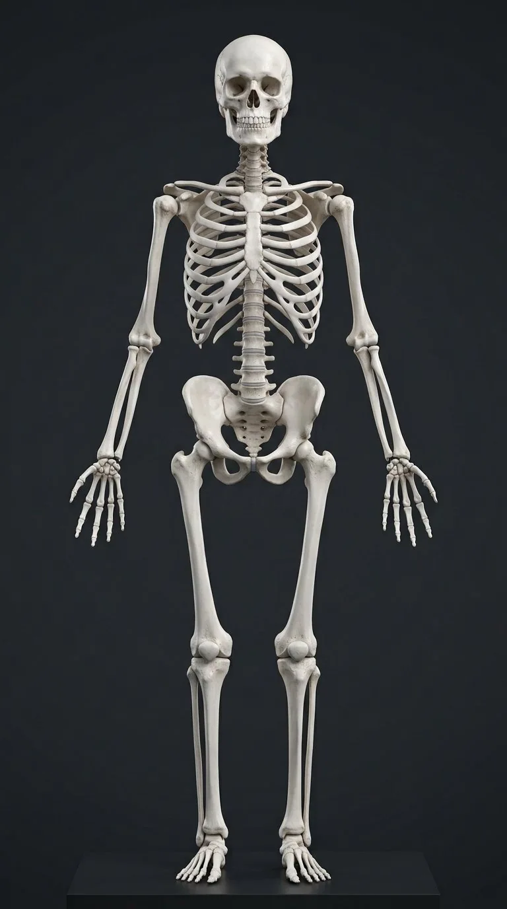

How this part of the body works
Anterior skeleton with the bones a student must point at in the first practical — axial column first, then the limbs.
Read the anatomy, part by part
These 31 structures correspond to the chapter’s regional illustration or schematic. Each entry separates location, function and a clinical point.
Skull
Fuses 8 cranial + 14 facial bones; houses brain and senses.
What it doesProtection and mastication anchor.
Clinical connectionBasilar skull fracture: raccoon eyes + CSF leak.
Clavicle
S-strut between sternum and scapula.
What it doesHolds the shoulder off the chest.
Clinical connectionMost commonly fractured bone in falls on the shoulder.
Sternum
Manubrium, body and xiphoid in the midline.
What it doesRib anchor; marrow biopsy site.
Clinical connectionSternal angle = T4/T5, the clinical landmark.
Rib cage
12 pairs: 7 true, 3 false, 2 floating.
What it doesBellows for breathing; heart and lung armour.
Clinical connectionRib fractures in elders can cause fatal pneumonia.
Vertebral column
7C-12T-5L-sacrum-coccyx with four curves.
What it doesAxial support and cord protection.
Clinical connectionHerniated discs press nerve roots segmentally.
Pelvis
Ilium, ischium, pubis + sacrum ring.
What it doesWeight transfer; birth canal in females.
Clinical connectionFemale pelvis is wider and shallower — obstetric adaptation.
Scapula
Triangular shoulder blade with glenoid fossa.
What it doesMobile socket for the arm.
Clinical connectionWinged scapula = long thoracic nerve palsy.
Humerus
Single upper-arm bone, head to condyles.
What it doesArm lever; radial nerve hugs its groove.
Clinical connectionMid-shaft fracture → wrist drop.
Radius
Lateral forearm bone (thumb side).
What it doesRotates in pronation/supination.
Clinical connectionColles' fracture: dinner-fork deformity.
Ulna
Medial forearm bone with olecranon.
What it doesHinge of the elbow.
Clinical connectionFractures with radial head dislocation (Monteggia).
Carpals & hand
8 carpals, 5 metacarpals, 14 phalanges.
What it doesPrecision and power grip.
Clinical connectionScaphoid fracture: tender snuffbox, risk of avascular necrosis.
Femur
Longest, strongest bone; neck-shaft angle.
What it doesWeight bearing and stride.
Clinical connectionNeck fractures in osteoporosis threaten blood supply to the head.
Patella
Largest sesamoid, inside quadriceps tendon.
What it doesExtensor lever and knee shield.
Clinical connectionBipartite patella mimics fracture on X-ray.
Tibia
Weight-bearing shin bone.
What it doesTransfers load to ankle.
Clinical connectionSecond commonest fracture site after forearm in kids.
Fibula
Slender lateral shin bone.
What it doesAnkle stability; muscle origin
Clinical connectionFibular neck fracture risks the common fibular nerve → foot drop.
Tarsals & foot
7 tarsals, 5 metatarsals, 14 phalanges + arches.
What it doesSpring-loaded platform for gait.
Clinical connectionCalcaneus fracture from falls — check the lumbar spine too.
Spinal ligaments (ALL/PLL/flavum)
Longitudinal and segmental ligament set.
What it doesStability plus flexion control.
Clinical connectionLigamentum flavum hypertrophy narrows the canal in stenosis.
Iliofemoral & hip ligaments
Strong Y-shaped anterior ligament set.
What it doesLimits extension; stabilises standing hip.
Clinical connectionAmong the strongest ligaments in the body.
Ankle collateral ligaments
Deltoid medially; ATFL, CFL, PTFL laterally.
What it doesTalar stability in inversion/eversion.
Clinical connectionInversion sprain tears ATFL first.
Temporomandibular joint
Condyle of mandible in the mandibular fossa, disc between.
What it doesHinge + glide: jaw open, close, protrude, grind.
Clinical connectionDisc displacement causes clicking and closed lock.
Sternoclavicular & acromioclavicular joints
Clavicle's two ends: sternum front, acromion laterally.
What it doesClavicular elevation, protraction, scapular rotation.
Clinical connectionPosterior SC dislocation threatens the great vessels.
Glenohumeral (shoulder) joint
Humeral head in the shallow glenoid fossa.
What it doesMost mobile joint: all three planes.
Clinical connectionAnterior dislocation with Bankart lesion.
Elbow joint
Trochlea + capitulum with ulna and radial head.
What it doesPure hinge: flexion–extension.
Clinical connectionSupracondylar fractures risk brachial artery injury.
Radiocarpal (wrist) joint
Radius + disc onto scaphoid, lunate, triquetrum.
What it doesFlex/extend, radial & ulnar deviation.
Clinical connectionFOOSH injuries: scaphoid fracture.
Intervertebral joints & discs
Symphysis between vertebral bodies: annulus + nucleus.
What it doesSmall glide summed into column flexion.
Clinical connectionPosterolateral disc herniation → sciatica.
Zygapophyseal (facet) joints
Synovial planes between superior/inferior articular processes.
What it doesGuide and limit segmental glide.
Clinical connectionFacet arthropathy is a common back-pain source.
Sacroiliac joint
Sacrum to ilium: synovial front, fibrous back.
What it doesMinimal glide; transfers trunk load to legs.
Clinical connectionSacroiliitis in ankylosing spondylitis.
Pubic symphysis
Fibrocartilage disc between pubic bodies.
What it doesMicro-movement; widens in pregnancy.
Clinical connectionPeripartum pubic symphysis dysfunction.
Hip joint
Femoral head in the acetabulum with its labrum.
What it doesStable ball & socket: weight bearing.
Clinical connectionFemoral neck fracture; DDH in infancy.
Knee joint
Femoral condyles, tibial plateau, patella.
What it doesHinge with rotation in flexion.
Clinical connectionUnhappy triad: ACL + MCL + medial meniscus.
Ankle (talocrural) joint
Malleolar mortise over the talar dome.
What it doesDorsi- and plantar-flexion hinge.
Clinical connectionInversion sprains tear the ATFL first.
Five questions about Skeleton
Short answers grounded in the structures described above. Use the illustrated guide for anatomical context.
How many bones are in an adult human skeleton?
The commonly taught adult count is 206 bones, though individual variants can change a person's count. The atlas separates axial and appendicular structures.
What is the difference between axial and appendicular skeleton?
The axial skeleton includes skull, vertebral column and thoracic cage. The appendicular skeleton includes limb bones and the shoulder and pelvic girdles.
What is the skull?
Fuses 8 cranial + 14 facial bones; houses brain and senses. Function: Protection and mastication anchor.
Where is the vertebral column located?
7C-12T-5L-sacrum-coccyx with four curves. Function: Axial support and cord protection.
What is the function of the femur?
Function: Weight bearing and stride. Longest, strongest bone; neck-shaft angle.
Related anatomy guides
Follow these connected structures and body systems in the illustrated atlas.
 Bone marrow & bloodThe hidden factory: red marrow makes two million blood cells per second; yellow marrow stores energy; both sit behind bone you see every day.↗
Bone marrow & bloodThe hidden factory: red marrow makes two million blood cells per second; yellow marrow stores energy; both sit behind bone you see every day.↗ Muscular systemEvery movement, every breath, every heartbeat's preload begins as muscle fibres sliding — here the skeletal set in écorché.↗
Muscular systemEvery movement, every breath, every heartbeat's preload begins as muscle fibres sliding — here the skeletal set in écorché.↗ Male body — anteriorA glass-body view of the male: every major organ in place, from brain to testes, with the reproductive tract in the pelvis.↗
Male body — anteriorA glass-body view of the male: every major organ in place, from brain to testes, with the reproductive tract in the pelvis.↗ Female body — anteriorA glass-body view of the female: major organs in place, with breasts, uterus and ovaries completing the picture.↗
Female body — anteriorA glass-body view of the female: major organs in place, with breasts, uterus and ovaries completing the picture.↗Further reading
General anatomy references and related source chapters for continued study. These links do not make the digital illustrations clinical images or certify every anatomical variant.
This educational material does not provide medical advice, diagnosis or treatment. A named clinical reviewer has not been claimed for this page.
Open the interactive plate, pins, animated schematic and self-test.